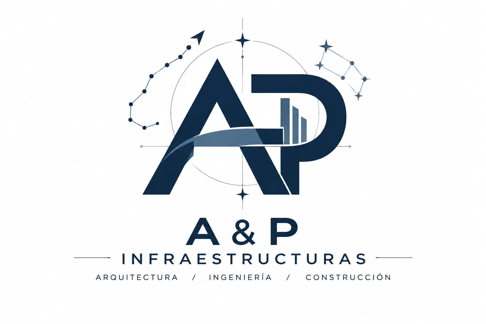
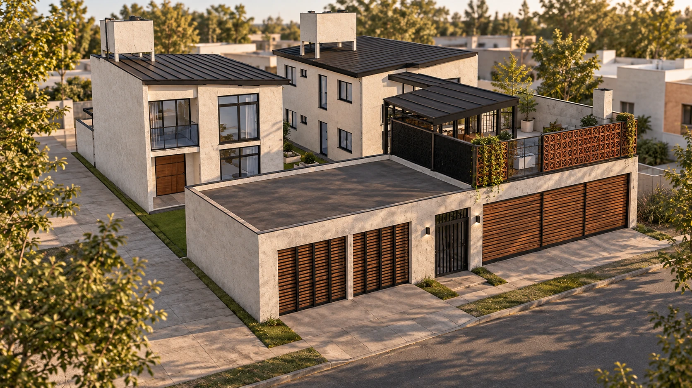
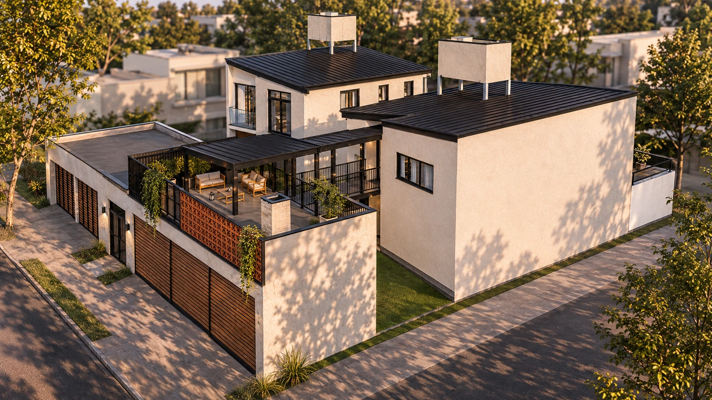
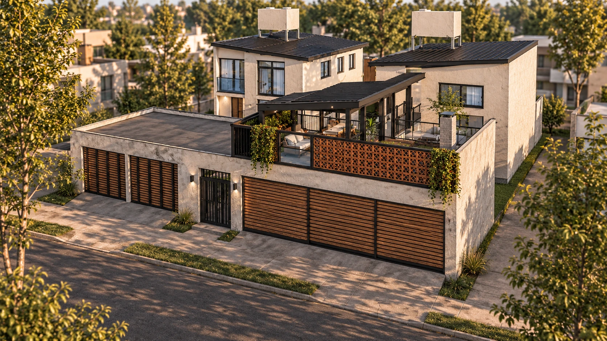

A&P / CENTRO DE PROYECTOS
PROYECTO ACADÉMICO EN DESARROLLO
SOLANA.
Complejo habitacional multifamiliar
Maipú, Mendoza, Argentina

A&P INFRAESTRUCTURASARQUITECTURA · INGENIERÍA · CONSTRUCCIÓNPROYECTO ACADÉMICO · ARQUITECTURA RESIDENCIAL
Complejo habitacional multifamiliar · Maipú, Mendoza, Argentina. Proyecto académico en desarrollo. La implantación, organización espacial y soluciones constructivas se documentan con el material disponible.
Los renders son visualizaciones del proyecto académico; no representan una obra construida ni documentación ejecutiva aprobada.
01 / RECORRIDO
Una introducción al proyecto y a la documentación disponible. Los planos detallados se consultan en la biblioteca técnica.



01 / 08
Usá las flechas ← → del teclado para avanzar.
02 / RENDERS
Imágenes del proyecto académico en desarrollo. Seleccioná una para ampliar.
Visualizaciones arquitectónicas del proyecto académico; no son fotografías de una construcción terminada.
03 / VIDEO
Reproducción bajo demanda del video original del proyecto.
El video no se reproduce automáticamente. Abrir video en otra pestaña.
04 / ESTUDIO SOLAR
Análisis comparativo de la incidencia solar sobre el modelo arquitectónico de SOLANA en condiciones de verano e invierno.
SIMULACIÓN ACADÉMICA
El Sol alcanza una mayor altura y hay más horas de luz; alrededor del mediodía, las sombras suelen ser más cortas. El control de la radiación excesiva es un aspecto a estudiar.
SIMULACIÓN ACADÉMICA
El Sol recorre una trayectoria más baja y hay menos horas de luz; las sombras suelen ser más largas. El asoleamiento directo puede ser favorable en espacios adecuados.
Simulación académica de asoleamiento. Configuración geográfica y parámetros solares pendientes de validación.
LECTURA GENERAL
En el hemisferio sur, la orientación norte suele ser favorable para estudiar estrategias de aprovechamiento solar invernal y protección estival. Su aplicación depende de la implantación y requiere análisis del proyecto.
Sobre estas grabaciones: muestran fechas aproximadas del 23 de junio y 26 de diciembre de 2026. La duración del día visible parece cercana a 14 horas en ambas. Es una observación de la simulación, no un dato astronómico validado; la ubicación, fecha, zona horaria y configuración solar del programa están pendientes de revisión.
05 / DOCUMENTACIÓN
Planos académicos en formato PDF, organizados por disciplina. Seleccioná un plano para cargarlo en el visor.
Documentación académica en desarrollo. No constituye documentación ejecutiva aprobada ni reemplaza verificaciones profesionales. Los planos tienen una página A3.